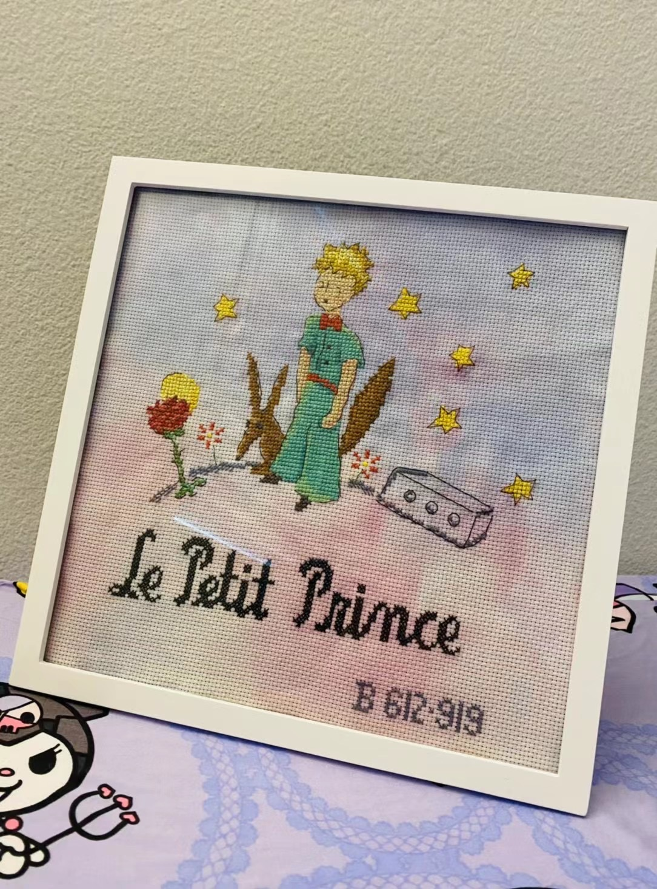
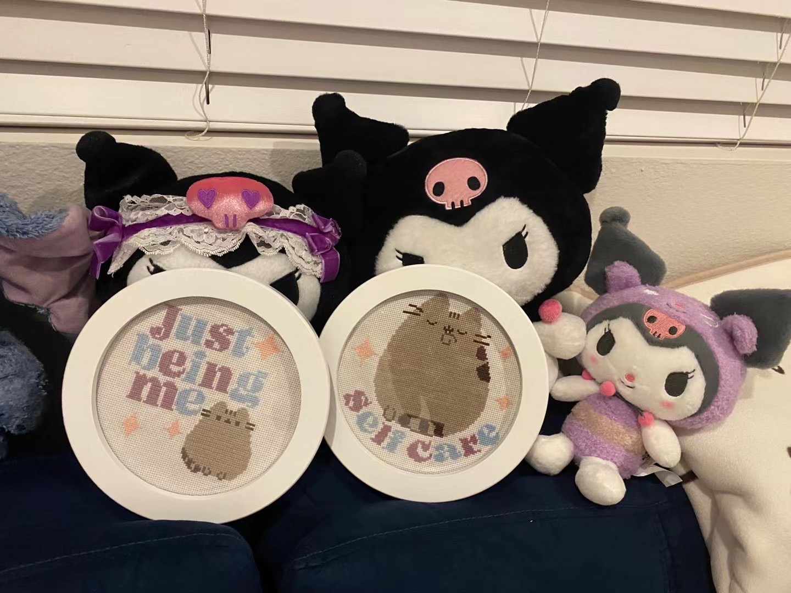

<div class="flex main-container">
    <h1>Recent Cross-Stitch Projects</h1>
    <div class="flex img-container center-y">
        <article class="card">
            
            <div class="card-body">
                <h2 class="card-title">
                    Le Petit Prince 
                    <br>
                    (The Little Prince)</h2>
            </div>
        </article>
        <article class="card">
            
            <div class="card-body">
                <h2 class="card-title">Pusheens on a Burger</h2>
            </div>
        </article>
        <article class="card">
            
            <div class="card-body">
                <h2 class="card-title">Self-Care Pusheens</h2>
            </div>
        </article>
    </div>
</div>
